Mutabbaq
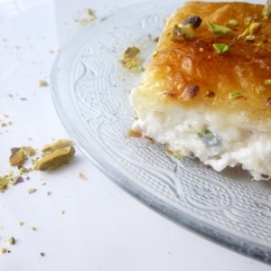
Bonjour tout le monde ! Aujourd’hui on continue la découverte du livre « Jerusalem » (article ici)
J’ai choisi directement la recette du Mutabbaq (p.262) quand je l’ai vu car pendant mon voyage à Jérusalem au mois de mars j’ai eu la chance de gouter au « knafeh ». Le knafeh qui est une pâtisserie palestinienne, composée de semoule ou d’une pâte qui rappelle des vermicelles (kadaifi), de pistaches, de sirop de sucre, d’un colorant alimentaire mais surtout de fromage de brebis non salé et je suis clairement devenue une grande fan!
Le Mutabbaq est également une pâtisserie palestinienne et également composée de fromage de brebis non salé ainsi que de sirop de sucre alors quand j’ai vu la recette sur le livre je me suis dit qu’il fallait à tout prix que je la tente! (et j’ai eu sacrément raison vu le résultat 🙂 ) Certes ce n’est pas du knafeh mais on y retrouve pas mal de ressemblance et la découverte de ce dessert en vaut vraiment la peine! Je pense que je vais en faire très régulièrement…
La recette est assez simple à réaliser et ne nécessite pas beaucoup d’ingrédients. On peut aussi le préparer à l’avance et le garder au réfrigérateur, puis le faire cuire au four avant de le servir.
Dans le livre il parle d’une variante à base de noix, cannelle et sucre .. A tester ! Si j’avais un reproche à faire au livre mais que j’ai déjà dit dans l’article consacré à celui ci, je trouve qu’il manque des photos pour expliquer la marche à suivre.
Assez bavardé! Je vous laisse découvrir la recette du Mutabbaq et vous me direz ce que vous en pensez !!
Enregistrer
Ingrédients
- Beurre clarifié - 130g
- feuilles de pâte filo 31*39cm - 14 feuilles
- ricotta - 500g
- fromage de chèvre tendre NON SALE - 250g
- eau - 9 cl
- sucre semoule - 280g
- jus de citron pressé - 3 càs
- pistaches non salées
Instructions
- Dans une casserole faire fondre le beurre (j'ai utilisé du beurre doux mais du beurre clarifié c'est bien mieux)
- Dans une jatte moyenne, mélanger les deux fromages jusqu'à obtenir un mélange homogène. Réserver
- Badigeonner de beurre fondu votre plaque à pâtisserie et déposer une première feuille de pâte filo (relever les bords comme sur la photo )
- Badigeonner cette première feuille de beurre et superposer une deuxième feuille sur la première
- Continuer comme ça jusqu’à obtenir une pile de sept feuilles sans oublier de relever les bords à chaque fois et de badigeonner de beurre entre chaque feuille de pâte
- Badigeonner de beurre la septième feuille
- Étaler le mélange de fromage sur la septième feuille de pâte filo sans trop aller jusqu'aux bords
- Badigeonner le fromage de beurre
- Recouvrir avec les sept feuilles de pâte filo restantes, en relevant les bord à chaque fois et en badigeonnant de beurre entre chacune
- Enfermer le fromage : avec les doigts, retourner DÉLICATEMENT les bords relevés sous le mutabbaq pour "emprisonner" le fromage et avoir des bords bien nets (voir photos) Petite astuce : Découpez aux ciseaux les 4 coins dans le sens du trait indiqué sur la photo afin de faciliter le pliage
- Résultat :
- Badigeonner de beurre
- A l'aide d'un couteau couper le dessus en carrés, le couteau devant presque atteindre le dessous du mutabbaq
- Enfourner et cuire pendant 25 minutes à 230° (surveillez la cuisson)
- Faire chauffer l'eau et le sucre dans une casserole et mélanger régulièrement avec une cuillère en bois
- A ébullition, ajouter le jus de citron et laisser bouillonner pendant 2 min
- Retirer du feu Vous pouvez ajouter au sirop 2-3 gouttes d'eau de fleur d'oranger
- Le mutabbaq doit être doré et croustillant en fin de cuisson
- Imbiber le mutabbaq de sirop en le versant doucement en toutes parts.
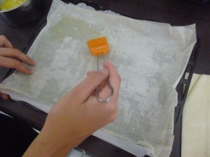
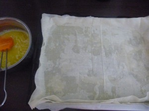
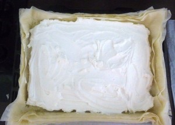
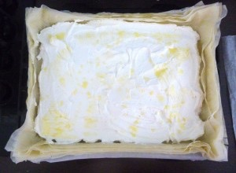
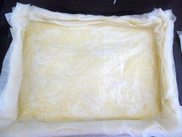
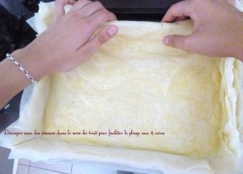
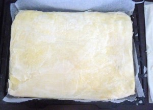
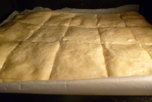
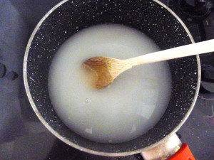
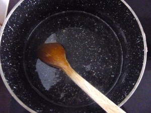
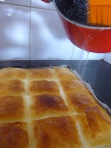
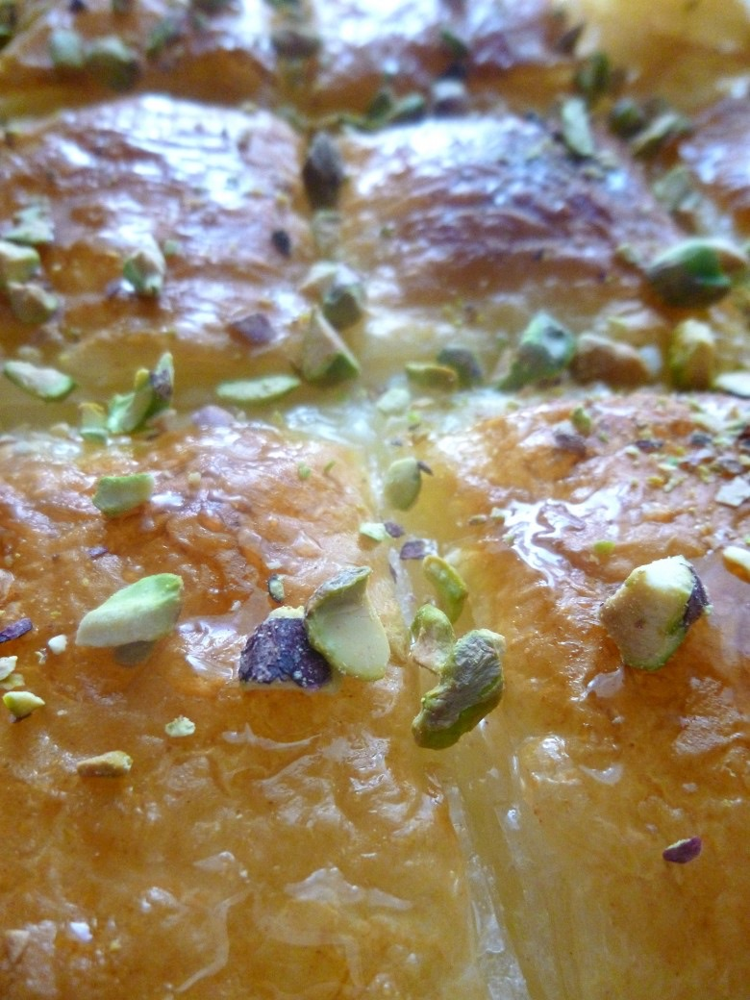
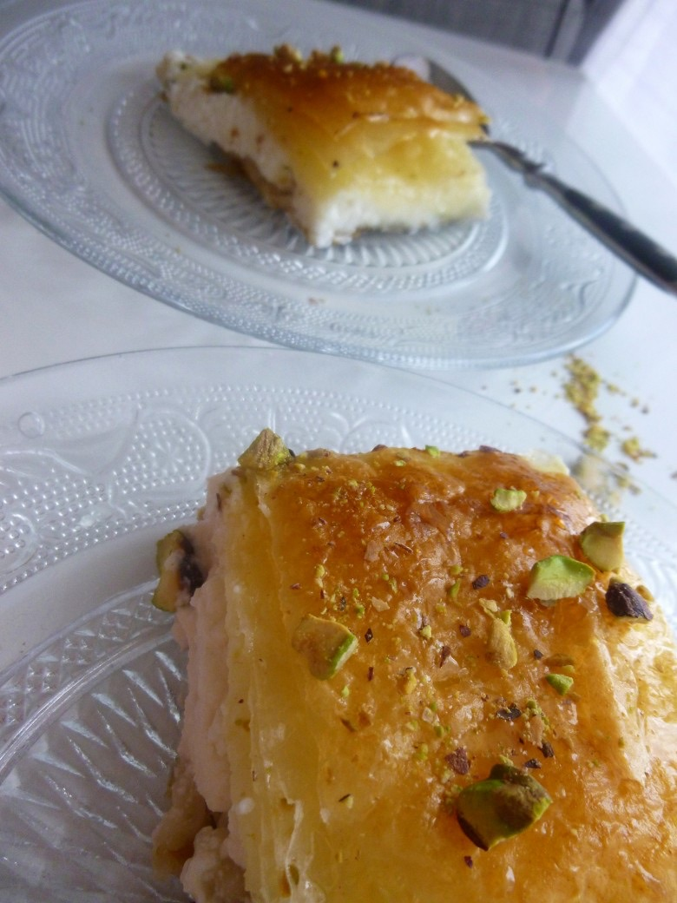
Les tips de la communauté
Dessert apprécié mais peu connu. Les lecteurs trouvent la recette excellente et découvrent un dessert sympathique. Questions sur le fromage utilisé. Discussions intéressantes sur les variations culturelles du sirop.
Astuces
- Utiliser du fromage de chèvre 'Chavrou' disponible en supermarché
- Les feuilles filo se trouvent au rayon frais près des pâtes feuilletées chez Leclerc/Carrefour
- Enrichir le sirop avec bâton de cannelle, boutons de rose séchées, écorces d'orange et clous de girofle
- Verser le sirop chaud sur le mutabbaq à la sortie du four
Variantes suggérées
- Sirop miel et sucre plutôt que sucre seul
- Ajouter des épices au sirop (cannelle, rose, écorces d'orange, clous de girofle)
Ajustements signalés
- un peu de parfum dans votre recette quand même enfin je suis de culture « ritalorientale »